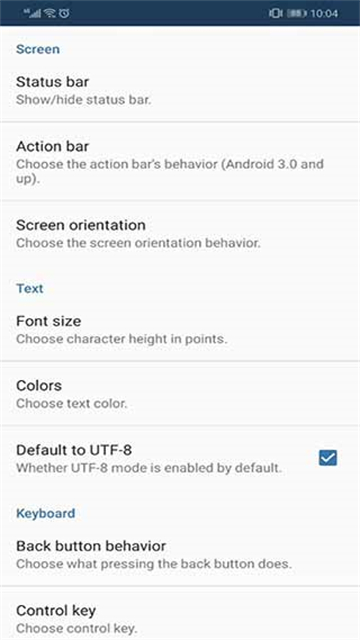
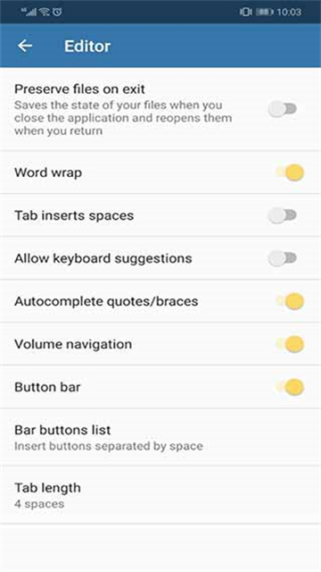

手机上跑 Python：Pydroid 3 从零上手实战
不想在电脑前写 Python？Pydroid 3 把完整 CPython 解释器塞进你的口袋。这篇教程带你从安装到调试器，一步步把手机变成能跑科学库、能调 GUI 的 Python 开发环境。
这篇教程结束时，你能在自己的安卓或 iOS 手机上装一个完整的 Python 环境，独立跑通 NumPy 数值计算、Matplotlib 画图、Kivy 界面示例，并且能用内置调试器单步排查代码问题。
准备：先确认你的平台
pydroid3官网上有安卓和 iOS 两个版本，核心功能一致但各有特色：
- 安卓版走 Google Play，免费版够用，Premium 解锁断点调试、AMOLED 主题等进阶功能；
- iOS 版在 App Store 上架，内置了更完整的交互式学习课程（10 章 Python 基础 + 数据科学 Track），免费就能用。
两者底层都是原生 CPython 解释器，不是浏览器里跑的 Pyodide——这意味着你能装绝大多数用 C 扩展的第三方库（NumPy、SciPy、Pillow 全都没问题），性能比 Web 方案快得多。
第一步：安装并确认解释器正常
从pydroid3下载获取安装包，或者应用商店搜 Pydroid 3 也能直接装，打开后你会看到左侧一排图标（Files / Interpreter / Samples / Terminal / Settings）。先别管别的，点 Interpreter 那个火箭图标，在下面的命令面板里敲一行：
import sys; print(sys.version)预期看到类似 3.11.x 的输出，说明解释器已经就绪。Pydroid 默认把标准库和常用科学库都预装好了——第一次启动就可以直接 import numpy，不用等 pip 慢慢拉包。

第二步：调整外观设置，把手机写代码变成可接受的事
手机屏幕只有 5-7 寸，默认主题和字体大小很容易让眼睛在 20 分钟后就开始抗议。打开 Settings → Appearance，花两分钟把这些项调一下：
- 主题：晚上用 AMOLED Black（纯黑底，OLED 屏最省电），白天户外切 Light；
- 字体大小：12pt 是比较舒服的起点，觉得挤就调到 14pt；
- 屏幕方向：手机写代码建议竖屏（能看到更多行数），平板反过来横屏锁死；
- 默认编码：保持 UTF-8 开启，避免中文字符串莫名其妙报错。
这一步很多新手会跳过，结果就是用了半小时就觉得"手机上写代码真累"——其实只是没调好外观。

第三步：跑通第一个科学计算示例
点左侧 Samples 图标，你会看到 Pydroid 自带的可运行示例列表。往上翻找到 NumPy 相关的条目，点进去直接 Run。预期输出一段数值矩阵和数学运算结果——这是确认科学库正常的最快方法。
不是让你照抄这些示例代码，而是让你用"看 + Run + 改"的节奏学习：跑通一个示例后，改几个参数再跑，看输出怎么变。这比对着教材从零敲效率高得多。
Samples 区覆盖四类内容：基础 Python（变量 / 控制流 / OOP）、科学计算（NumPy / Matplotlib / pandas）、GUI 框架（Kivy / Tkinter / Pygame）、进阶（Requests 网络请求、文件处理）。每个示例都能直接 Run，需要第三方库的 Pydroid 会自动提示安装。
第四步：pip 装你自己需要的库
预装的库只是起步，你迟早会碰到没装的。点 Interpreter，下面有个 PIP 面板，直接搜包名然后安装就行。国内用户如果下载慢，可以在 Settings → Interpreter 里把 pip 源改成清华或阿里镜像。更多 pip 源配置和常见问题在pydroid3文档里有详细说明。
一个实用技巧：先在 Interpreter 里用 pip install --dry-run 包名 看依赖链，再决定要不要真装——手机存储有限，装大之前先确认它会拉多少东西下来。
第五步：碰到逻辑 bug 怎么办
print 语句是最简单的调试办法，但如果你的逻辑有多层循环和条件分支，print 很快就会失控。Pydroid Premium 版有完整的 PDB 断点调试器：
- 在编辑器左侧行号 gutter 上单击某一行，会出现一个红点（断点）；
- Run 程序，Pydroid 会先跑到第一个断点停下，底部弹出调试面板；
- 面板里有 Step Over（执行当前行不进函数）、Step Into（进入函数内部）、Step Out（退出当前函数）、Continue（跑到下一个断点）四个按钮，还有 Watch 功能可以盯着某个变量的值变化。
免费版没有断点调试器，但 Pydroid 会在 Run 后直接把 traceback 显示在输出面板里，告诉你哪一行报了什么错——语法错误和基础逻辑错误已经够用了。
常见卡点
卡点一：pip 装包时报 "No matching distribution found"
原因通常有两个：一是你装的包需要 C 扩展但 Pydroid 里的 Python 版本对不上；二是包本身不是跨平台的。解法：先去 Pydroid 的仓库看看有没有已经编译好的轮子，或者换一个功能相近但纯 Python 实现的包。
卡点二：切后台后程序被系统杀掉
安卓后台管理比较激进，长时间运行的脚本或 Jupyter kernel 很容易被回收。解法：把脚本改成周期性写入文件（用 time.sleep 配合 with open(...)），或者用 app_process 在前台保持一个唤醒锁。iOS 版因为沙箱策略不同，后台限制更严格，建议只做短任务。
卡点三：Jupyter Notebook 在手机上不好使
Pydroid 内置了 .ipynb 查看器，但移动端体验和 PC 差距很大——没有 kernel 状态共享，每次运行单元都是独立的，变量不会跨 cell 保留。如果你只是想在手机上快速浏览 Notebook 内容，够用；如果要真正做交互式开发，换成内置 IPython 更合适（左侧 Terminal 里直接敲 ipython 就能进命令行交互模式，有历史记录和魔法命令）。
进阶一句话
基础跑通之后可以试试 Kivy GUI 示例——Pydroid 完整支持 Kivy，意味着你能在手机上直接写一个带界面的安卓 Python 应用。
这套资料我同步维护在三个仓库里，方便不同网络环境下访问：GitHub主仓库更新最快，国内用户走Gitee或GitCode镜像体验更顺畅。